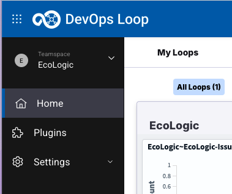
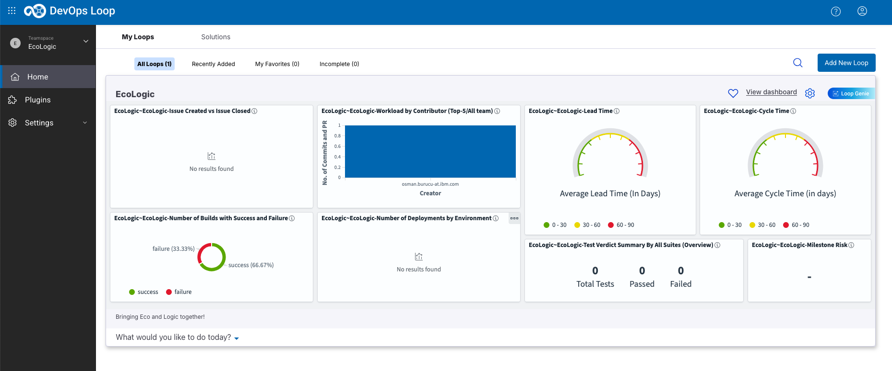
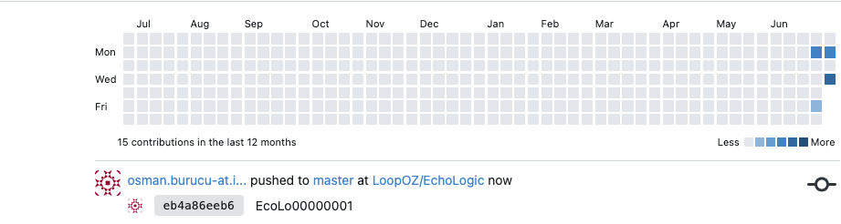
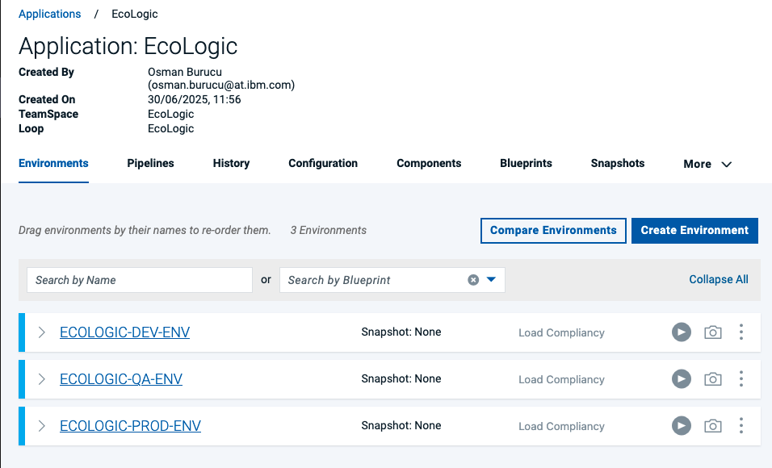
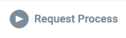

Demo Flow

Loop
- Show Home Page
- click on Home button in the side bar to switch to the Home Page
- 
- 
- and explain that we have a lot of metrics.
Plan


Code
- Explain that we showed the link between a work item and the code in control.
- Now open CODE ( use VScode for now, Switch to DevOps Code later)


Control
- Open Control
- Show the Update in the activity report of the repository
- Activity Report: 
- Git Commit Details:
Build


Deploy
- Open Deploy by Using the ‘What would you like to do today’ and select Deploy
- Show the landing page and explain the metrics
- Show process (components, app)
- Component Process:

- Component Process:
- Edit process
- show a process which executes a TEST with setting quality tag on version.

- TODO: add test script step as soon as TEST is ready
- Run and view results of steps
- 
- click on Request Process Button: 

- Show result (environment and version changes of comp).
- Use Deploy Genie to understand why the deployment failed.
- TODO: update as soon as connected to openai to showcase Deploy Genie
- Show the plug-ins page and explain how easy it is to integrate with 3rd parties out of the box.
- Switch to Settings by using the Settings Icon:


- Switch to Settings by using the Settings Icon:
- Show the landing page and explain the metrics


Test
- Open Test
- Explain that you are now playing the role of a tester
- Show the test landing page and metrics.
- Run integration test
- Run performance test
- Explain that our service might not be ready so switch on a virtual service.
- Run the tests again as a suite.
- Show the analysis of the test results.
- Show how we can create or edit a test.
- Generate test data
- Show a security test report.
- Run a new test that will fail.
- Create a defect in Plan and show that is has all the data automatically.
- Explain that everything is traceable.
Measure
- Open Measure
- Explain that we have built, deployed and tested so now we need to coordinate releases.
- Show and talk about pipeline(s) with environments and Gates
- Create simple new gate to show usage of metrics
- Release - Show release overview with calendar
- Explain that we have been shoeing individual roles but we can look across roles and track the value of our delivery work.
- Open the VSM for the project
- Show the audit information of a dot.
- Show the swimlane view.
- So how do we ensure everyone understands the state of our project. Well we can generate a release readiness report. – Generate the report.
Genie
Explain that we have covered a lot of roles and used a mixture of AI and automation but we can bring it all together with what we call our Loop Genie
- Open the Home page.
- Click Loop Genie.
- Ask xyz question.
- Explain that we are back to the start and that this has been a quick end to end demo.